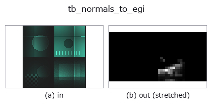

typed op• Datenarten: points → image
• Aufruf: fullseye.apply(img, "tb_normals_to_egi", a=0.5, b=0.5) (das 2-D-Modell ist ein Bild plus zwei skalare Regler a,b∈[0,1])

*Die Abbildung ist die tatsächliche Ausgabe auf einer synthetischen 128×128-Eingabe. Links Eingabe, rechts Ausgabe. Punktwolken als Draufsicht-Streudiagramm (Helligkeit = z), 1-D-Reihen als Linie, Volumen als Maximum-Projektion entlang z, Videos als mittleres Bild, komplexe Bilder als Betrag; Rückgabewerte, die kein Bild ergeben, werden als Werte gezeigt.*
Regler a durchfahren (0,1 / 0,5 / 0,9, der andere Regler auf Standard):
▸ tb_normals_to_egi: Regler a durchfahren (Doku-Website)
Regler b durchfahren (0,1 / 0,5 / 0,9, der andere Regler auf Standard):
▸ tb_normals_to_egi: Regler b durchfahren (Doku-Website)
Stufen (die vorangehenden Ops → dieser Op, von links nach rechts):
▸ tb_normals_to_egi: Stufen (Doku-Website)
Auf anderen Bildern (synthetische Szene / Foto / Münzen. Obere Reihe: Eingaben, untere Reihe: deren Ausgaben. Regler auf Standard):
▸ tb_normals_to_egi: andere Eingaben (Doku-Website)
Normalen (N,3) → image2d des Extended Gaussian Image (n_el, n_az).
Ein 2-D-Histogramm der Richtungen (Horn, *Extended Gaussian Images*, Proc. IEEE 72(12) 1984). Eine Karte, "wie viel Fläche in welche Richtung zeigt"; bei Objekten, in denen Ebenen dominieren, entsteht in 1 bin ein Gipfel. Irreversibel —— die Richtungsauflösung einer bin-Breite wird verworfen. Das Verworfene ist messbar: Der Winkel zwischen der Mittelrichtung der häufigsten bin und der mittleren Eingangsrichtung ist der Quantisierungsfehler; beim Standard (36, 18) gemessen 3.7 Grad bei einer bin-Breite von 10 Grad (gibt selftest aus).
Die Elevations-bins teilen sin(el) gleichmäßig (gleicher Raumwinkel). Bei gleichmäßiger Teilung in Grad werden die Pole übermäßig fein, und es entsteht ein falscher Gipfel "die Flächen konzentrieren sich am Nordpol".
Args:
normals: (N, 3).
n_az: Zahl der Azimut-bins (Standard 36 = 10-Grad-Schritte).
n_el: Zahl der Elevations-bins (Standard 18).
★Auch eine Punktwolke von Positionen löst keine Ausnahme aus. backends_typed.TYPE_TO_SORT faltet normals in points, daher unterscheiden weder der Evolver noch das Register (Ledger) die beiden. Diese Op betrachtet nur Richtungen (die Länge wird verworfen); übergibt man (N,3)-Koordinaten, kommt plausibel ein Histogramm "der Richtung vom Ursprung zu jedem Punkt" zurück. Gemessen (2026-09-08, eine Kurve aus 200 Punkten vs. lauter senkrecht nach oben zeigende Normalen): Die von null verschiedenen bins ändern sich nur 1 → 12, die größte bin 200 → 44, die Summe ist in beiden Fällen 200. Mit "die Summe stimmt mit der Punktzahl überein, also ist es richtig" lässt sich das nicht unterscheiden. Mit fullseye.set_system("extra_checks", "on") werden Vektoren, die von der Einheitslänge abweichen, abgewiesen (siehe Raises unten).
Args:
normals: (N, 3).
n_az: Zahl der Azimut-bins (Standard 36 = 10-Grad-Schritte).
n_el: Zahl der Elevations-bins (Standard 18).
Returns:
(n_el, n_az) float64-Zählkarte (Zeile = Elevation, Spalte = Azimut).
Raises:
ValueError: bin-Zahl unter 1 / über der Obergrenze / ungültige Eingabe.
ValueError: bei extra_checks='on', wenn Vektoren enthalten sind, deren Länge um mehr als 1e-6 von 1
abweicht (fängt den Unfall ab, eine Punktwolke von Positionen als Normalen zu übergeben).
Die reprconv-Op normals_to_egi, in die 2-D-Evolutionsregistry überbrückt. Die Implementierung ist dieselbe; nur die Aufrufkonvention ist an op(v, a, b) angepasst. a variiert n_az (Standard 36), b variiert n_el (Standard 18). ★Die überbrückte Op gibt den Anteil zurück (den Anteil der Normalen je bin, Summe 1, Wertebereich [0,1]), also die Zählungen geteilt durch die Gesamtzahl —— um dem [0,1]-Vertrag der deklarierten sort image zu genügen (mit rohen Zählungen kamen Werte wie ein Maximum von 48 heraus, 2026-10-07). Die rohen Zählungen liefern reprconv.normals_to_egi / fullseye.ledger.normals_to_egi.
• Katalog der Beispieldaten (Download-URLs / Lizenzen) — 2-D nutzt skimage.data (BSD/Public Domain) plus synthetische Bilder, 3-D nennt Download-URLs echter Datenquellen (Stanford, PDS, …).
• Herkunft und Literatur der Operatoren — die Quellen der Forschung/Verfahren, auf denen diese Operatorfamilie beruht.
Das Programm unten ist nachweislich lauffähig (gleiche Eingabe wie die Abbildung). In der Studio-Hilfe wird dieser Block zu Schaltflächen, die es sofort laden und ausführen.
img_to_points 0.50 0.50 tb_normals_to_egi 0.50 0.50
▸ Diese Pipeline laden · Laden & ausführen
Die folgenden Beispiele rufen den zugrunde liegenden Ledger-Op normals_to_egi auf. Dieser Brücken-Op ist dieselbe Implementierung, angepasst an die Konvention fn(v, a, b); das Verhalten gilt unverändert (nur die Aufrufform unterscheidet sich).
• representation_conversion — py -3.11 examples/representation_conversion.py
image als Eingabe)identity · gaussian · mean_box · bilateral · unsharp · median · min_filter · max_filter
typed)tb_points_to_voxel · tb_estimate_point_normals · tb_iss_keypoints · tb_project_points · tb_render_point_depth · tb_statistical_outlier_removal · tb_radius_outlier_removal · tb_voxel_grid_downsample
*Provenance: ops.py — 2D Operator-Registry. Diese Notiz wird von tools/opdocs.py md erzeugt (nicht von Hand bearbeiten).*
© 2026 Kazufumi Furuse — Fullseye operator documentation. Licensed under Apache-2.0.